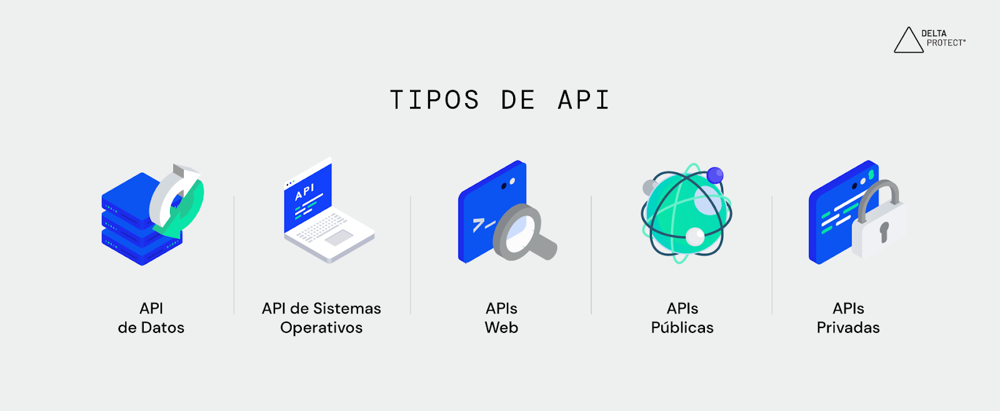

Tipos de APIs que existen

- APIs públicas (Open APIs): Están disponibles para cualquier desarrollador o usuario. Se usan mucho en aplicaciones web y móviles que necesitan conectarse a servicios externos. Un ejemplo es la API de OpenWeatherMap, que permite obtener datos meteorológicos, o la API de Google Maps, que ofrece mapas e información de ubicación.
- APIs privadas: Se utilizan exclusivamente dentro de una organización. Permiten que los distintos sistemas internos se comuniquen sin exponer información sensible. Por ejemplo, una empresa puede tener una API interna que conecta su sistema de inventario con el módulo de facturación.
- APIs de socios (Partner APIs): Son compartidas con empresas o socios estratégicos bajo acuerdos de uso específicos. Suelen incluir mecanismos de autenticación más estrictos y se usan, por ejemplo, entre plataformas de pago y tiendas en línea que intercambian datos de pedidos y pagos.
- APIs abiertas al público con registro (Semi-públicas): Son APIs accesibles, pero requieren registrarse para obtener una clave de autenticación. De esta manera se controla el acceso y se evita el abuso. Un ejemplo es la API de Twitter (X), que permite obtener datos de publicaciones o perfiles con ciertas restricciones.
- APIs locales o de sistema operativo: Permiten que los programas interactúen con las funciones del sistema operativo. Por ejemplo, las APIs de Windows o Android permiten que una aplicación abra archivos, controle el audio o acceda a la cámara del dispositivo.
- APIs web (REST y SOAP): Se utilizan en la comunicación entre aplicaciones a través de Internet. REST es el tipo más moderno y ligero, basado en HTTP, mientras que SOAP usa un formato más estructurado con XML. Estas APIs son esenciales para el desarrollo de servicios web modernos.